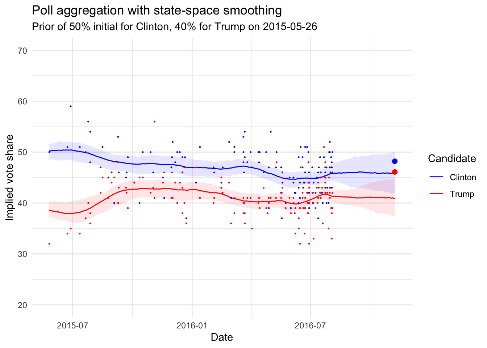

![]()
library(tidyverse)
library(rvest)
library(rstan)
library(lubridate)
options(mc.cores = parallel::detectCores())
# The polling data
realclearpolitics_all <- read_html("http://www.realclearpolitics.com/epolls/2016/president/us/general_election_trump_vs_clinton-5491.html#polls")
# Scrape the data
polls <- realclearpolitics_all %>%
html_node(xpath = '//*[@id="polling-data-full"]/table') %>%
html_table() %>%
filter(Poll != "RCP Average")Motivating Example
I have always been interested in state space modeling. It is really interesting to see how this modeling strategy works in the realm of opinion polling. Luckily I stumbled across an example that James Savage put together for a workshop series on Econometrics in Stan. Additionally, while I was writing this blog post by happenstance Peter Ellis put out a similar state space Bayesian model for the most recent Australian elections. His forecasts were by far the most accurate out there and predicted the actual results. I wanted to borrow and extend from his work as well.
Collect the Data
This is the original data collection routine from James Savage’s work.
Develop a helper function.
# Function to convert string dates to actual dates
get_first_date <- function(x){
last_year <- cumsum(x=="12/22 - 12/23")>0
dates <- str_split(x, " - ")
dates <- lapply(1:length(dates), function(x) as.Date(paste0(dates[[x]],
ifelse(last_year[x], "/2015", "/2016")),
format = "%m/%d/%Y"))
first_date <- lapply(dates, function(x) x[1]) %>% unlist
second_date <- lapply(dates, function(x) x[2])%>% unlist
data_frame(first_date = as.Date(first_date, origin = "1970-01-01"),
second_date = as.Date(second_date, origin = "1970-01-01"))
}Continue cleaning.
# Convert dates to dates, impute MoE for missing polls with average of non-missing,
# and convert MoE to standard deviation (assuming MoE is the full 95% one sided interval length??)
polls <- polls %>%
mutate(start_date = get_first_date(Date)[[1]],
end_date = get_first_date(Date)[[2]],
N = as.numeric(gsub("[A-Z]*", "", Sample)),
MoE = as.numeric(MoE))%>%
select(end_date, `Clinton (D)`, `Trump (R)`, MoE) %>%
mutate(MoE = ifelse(is.na(MoE), mean(MoE, na.rm = T), MoE),
sigma = MoE/2) %>%
arrange(end_date) %>%
filter(!is.na(end_date))
# Stretch out to get missing values for days with no polls
polls3 <- left_join(data_frame(end_date = seq(from = min(polls$end_date),
to= as.Date("2016-08-04"),
by = "day")), polls) %>%
group_by(end_date) %>%
mutate(N = 1:n()) %>%
rename(Clinton = `Clinton (D)`,
Trump = `Trump (R)`)I wanted to extend the data frame with blank values out until closer to the election. This is that step.
polls4 <- polls3 %>%
full_join(
tibble(end_date = seq.Date(min(polls3$end_date),
as.Date("2016-11-08"), by = 1)))Joining, by = "end_date"# One row for each day, one column for each poll on that day, -9 for missing values
Y_clinton <- polls4 %>% reshape2::dcast(end_date ~ N, value.var = "Clinton") %>%
dplyr::select(-end_date) %>%
as.data.frame %>% as.matrix
Y_clinton[is.na(Y_clinton)] <- -9
Y_trump <- polls4 %>% reshape2::dcast(end_date ~ N, value.var = "Trump") %>%
dplyr::select(-end_date) %>%
as.data.frame %>% as.matrix
Y_trump[is.na(Y_trump)] <- -9
# Do the same for margin of errors for those polls
sigma <- polls4 %>% reshape2::dcast(end_date ~ N, value.var = "sigma")%>%
dplyr::select(-end_date)%>%
as.data.frame %>% as.matrix
sigma[is.na(sigma)] <- -9Our Model
I have modified the model slightly to add the polling inflator that Peter Ellis uses in order to account for error outside of traditional polling error. There is a great deal of literature about this point in the Total Survey Error framework. Basically adding this inflator allows for additional uncertainty to be put into the model.
writeLines(readLines("model.stan"))// From James Savage at https://github.com/khakieconomics/stanecon_short_course/blob/80263f84ebe95be3247e591515ea1ead84f26e3f/03-fun_time_series_models.Rmd
//and modification inspired by Peter Ellis at https://github.com/ellisp/ozfedelect/blob/master/model-2pp/model-2pp.R
// saved as models/state_space_polls.stan
data {
int polls; // number of polls
int T; // number of days
matrix[T, polls] Y; // polls
matrix[T, polls] sigma; // polls standard deviations
real inflator; // amount by which to multiply the standard error of polls
real initial_prior;
real random_walk_sd;
real mu_sigma;
}
parameters {
vector[T] mu; // the mean of the polls
real<lower = 0> tau; // the standard deviation of the random effects
matrix[T, polls] shrunken_polls;
}
model {
// prior on initial difference
mu[1] ~ normal(initial_prior, mu_sigma);
tau ~ student_t(4, 0, 5);
// state model
for(t in 2:T) {
mu[t] ~ normal(mu[t-1], random_walk_sd);
}
// measurement model
for(t in 1:T) {
for(p in 1:polls) {
if(Y[t, p] != -9) {
Y[t,p]~ normal(shrunken_polls[t, p], sigma[t,p] * inflator);
shrunken_polls[t, p] ~ normal(mu[t], tau);
} else {
shrunken_polls[t, p] ~ normal(0, 1);
}
}
}
}Compile The Model
state_space_model <- stan_model("model.stan")Trying to compile a simple C fileRunning /usr/local/Cellar/r/4.1.2/lib/R/bin/R CMD SHLIB foo.c
/usr/local/opt/llvm/bin/clang -I"/usr/local/Cellar/r/4.1.2/lib/R/include" -DNDEBUG -I"/usr/local/lib/R/4.1/site-library/Rcpp/include/" -I"/usr/local/lib/R/4.1/site-library/RcppEigen/include/" -I"/usr/local/lib/R/4.1/site-library/RcppEigen/include/unsupported" -I"/usr/local/lib/R/4.1/site-library/BH/include" -I"/usr/local/lib/R/4.1/site-library/StanHeaders/include/src/" -I"/usr/local/lib/R/4.1/site-library/StanHeaders/include/" -I"/usr/local/lib/R/4.1/site-library/RcppParallel/include/" -I"/usr/local/lib/R/4.1/site-library/rstan/include" -DEIGEN_NO_DEBUG -DBOOST_DISABLE_ASSERTS -DBOOST_PENDING_INTEGER_LOG2_HPP -DSTAN_THREADS -DUSE_STANC3 -DSTRICT_R_HEADERS -DBOOST_PHOENIX_NO_VARIADIC_EXPRESSION -DBOOST_NO_AUTO_PTR -include '/usr/local/lib/R/4.1/site-library/StanHeaders/include/stan/math/prim/fun/Eigen.hpp' -D_REENTRANT -DRCPP_PARALLEL_USE_TBB=1 -I/usr/local/opt/gettext/include -I/usr/local/opt/readline/include -I/usr/local/opt/xz/include -I/usr/local/include -fPIC -g -O3 -Wall -pedantic -std=gnu99 -mtune=native -pipe -c foo.c -o foo.o
In file included from <built-in>:1:
In file included from /usr/local/lib/R/4.1/site-library/StanHeaders/include/stan/math/prim/fun/Eigen.hpp:22:
In file included from /usr/local/lib/R/4.1/site-library/RcppEigen/include/Eigen/Dense:1:
In file included from /usr/local/lib/R/4.1/site-library/RcppEigen/include/Eigen/Core:88:
/usr/local/lib/R/4.1/site-library/RcppEigen/include/Eigen/src/Core/util/Macros.h:628:1: error: unknown type name 'namespace'
namespace Eigen {
^
/usr/local/lib/R/4.1/site-library/RcppEigen/include/Eigen/src/Core/util/Macros.h:628:16: error: expected ';' after top level declarator
namespace Eigen {
^
;
In file included from <built-in>:1:
In file included from /usr/local/lib/R/4.1/site-library/StanHeaders/include/stan/math/prim/fun/Eigen.hpp:22:
In file included from /usr/local/lib/R/4.1/site-library/RcppEigen/include/Eigen/Dense:1:
/usr/local/lib/R/4.1/site-library/RcppEigen/include/Eigen/Core:96:10: fatal error: 'complex' file not found
#include <complex>
^~~~~~~~~
3 errors generated.
make: *** [foo.o] Error 1Prep the Data
clinton_data <- list(
T = nrow(Y_clinton),
polls = ncol(Y_clinton),
Y = Y_clinton,
sigma = sigma,
initial_prior = 50,
random_walk_sd = 0.2,
mu_sigma = 1,
inflator =sqrt(2)
)
trump_data <- list(
T = nrow(Y_trump),
polls = ncol(Y_trump),
Y = Y_trump,
sigma = sigma,
initial_prior = 40,
random_walk_sd = 0.2,
mu_sigma = 1,
inflator =sqrt(2)
)Run the Model
clinton_model <- sampling(state_space_model,
data = clinton_data,
iter = 600,
refresh = 0, chains = 2,
control = list(adapt_delta = .95,
max_treedepth = 15))Warning: The largest R-hat is 1.18, indicating chains have not mixed.
Running the chains for more iterations may help. See
https://mc-stan.org/misc/warnings.html#r-hatWarning: Bulk Effective Samples Size (ESS) is too low, indicating posterior means and medians may be unreliable.
Running the chains for more iterations may help. See
https://mc-stan.org/misc/warnings.html#bulk-essWarning: Tail Effective Samples Size (ESS) is too low, indicating posterior variances and tail quantiles may be unreliable.
Running the chains for more iterations may help. See
https://mc-stan.org/misc/warnings.html#tail-esstrump_model <- sampling(state_space_model,
data = trump_data,
iter = 600,
refresh = 0, chains = 2,
control = list(adapt_delta = .95,
max_treedepth = 15))Warning: The largest R-hat is 1.74, indicating chains have not mixed.
Running the chains for more iterations may help. See
https://mc-stan.org/misc/warnings.html#r-hatWarning: Bulk Effective Samples Size (ESS) is too low, indicating posterior means and medians may be unreliable.
Running the chains for more iterations may help. See
https://mc-stan.org/misc/warnings.html#bulk-essWarning: Tail Effective Samples Size (ESS) is too low, indicating posterior variances and tail quantiles may be unreliable.
Running the chains for more iterations may help. See
https://mc-stan.org/misc/warnings.html#tail-essInferences
# Pull the state vectors
mu_clinton <- extract(clinton_model, pars = "mu", permuted = T)[[1]] %>%
as.data.frame
mu_trump <- extract(trump_model, pars = "mu", permuted = T)[[1]] %>%
as.data.frame
# Rename to get dates
names(mu_clinton) <- unique(paste0(polls4$end_date))
names(mu_trump) <- unique(paste0(polls4$end_date))# summarise uncertainty for each date
mu_ts_clinton <- mu_clinton %>% reshape2::melt() %>%
mutate(date = as.Date(variable)) %>%
group_by(date) %>%
summarise(median = median(value),
lower = quantile(value, 0.025),
upper = quantile(value, 0.975),
candidate = "Clinton")No id variables; using all as measure variablesmu_ts_trump <- mu_trump %>% reshape2::melt() %>%
mutate(date = as.Date(variable)) %>%
group_by(date) %>%
summarise(median = median(value),
lower = quantile(value, 0.025),
upper = quantile(value, 0.975),
candidate = "Trump")No id variables; using all as measure variablesWhich gives us the following:
actual_voteshare <- tibble(date = as.Date("2016-11-08"),
value = c(48.2, 46.1),
candidate = c("Clinton", "Trump"))
bind_rows(mu_ts_clinton, mu_ts_trump) %>%
ggplot(aes(x = date)) +
geom_ribbon(aes(ymin = lower, ymax = upper, fill = candidate),alpha = 0.1) +
geom_line(aes(y = median, colour = candidate)) +
ylim(20, 70) +
scale_colour_manual(values = c("blue", "red"), "Candidate") +
scale_fill_manual(values = c("blue", "red"), guide = F) +
geom_point(data = polls4, aes(x = end_date, y = `Clinton`), size = 0.2, colour = "blue") +
geom_point(data = polls4, aes(x = end_date, y = Trump), size = 0.2, colour = "red") +
xlab("Date") +
ylab("Implied vote share") +
ggtitle("Poll aggregation with state-space smoothing",
subtitle= paste("Prior of 50% initial for Clinton, 40% for Trump on", min(polls4$end_date)))+
theme_minimal()+
geom_point(data = filter(actual_voteshare, candidate == "Clinton"),
aes(date, value), colour = "blue", size = 2)+
geom_point(data = filter(actual_voteshare, candidate == "Trump"),
aes(date, value), colour = "red", size = 2)Warning: Removed 428 rows containing missing values (geom_point).
Removed 428 rows containing missing values (geom_point).Warning: It is deprecated to specify `guide = FALSE` to remove a guide. Please
use `guide = "none"` instead.
So the outcome was not totally out of the bounds of a good predictive model!
Reuse
Citation
BibTeX citation:
@online{dewitt2019,
author = {Michael DeWitt},
title = {State {Space} {Models} for {Poll} {Prediction}},
date = {2019-05-18},
url = {https://michaeldewittjr.com/programming/2019-05-18-state-space-models-for-poll-prediction},
langid = {en}
}
For attribution, please cite this work as:
Michael DeWitt. 2019. “State Space Models for Poll
Prediction.” May 18, 2019. https://michaeldewittjr.com/programming/2019-05-18-state-space-models-for-poll-prediction.